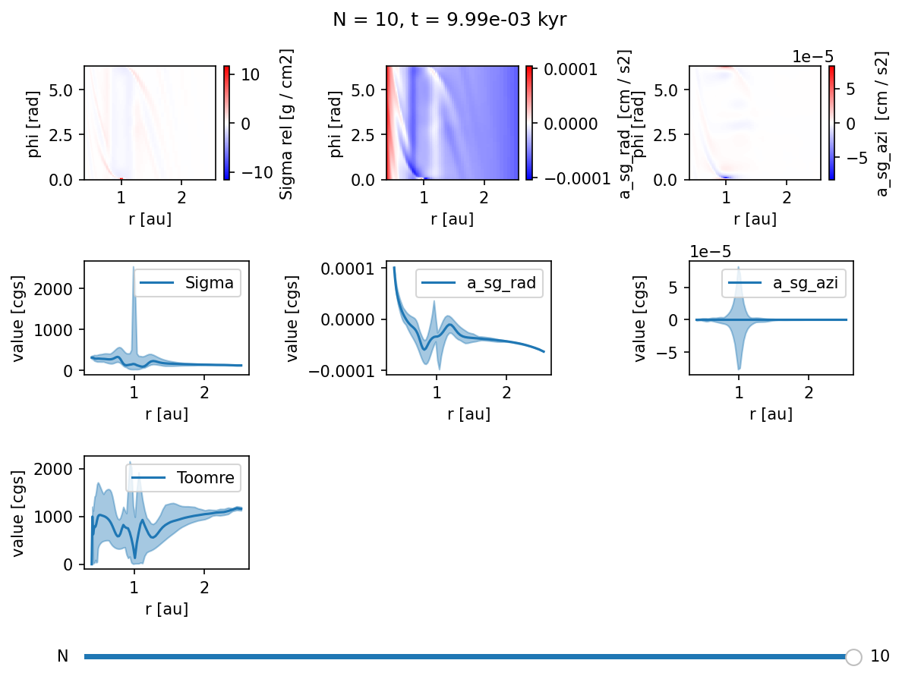
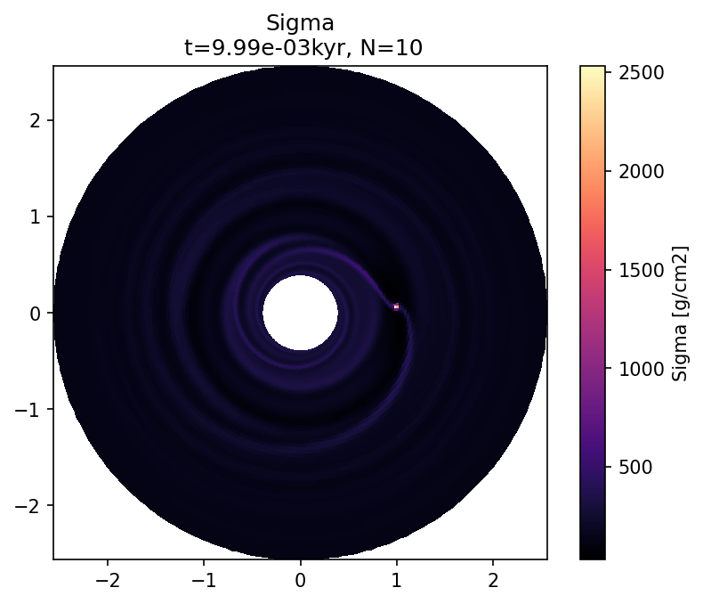
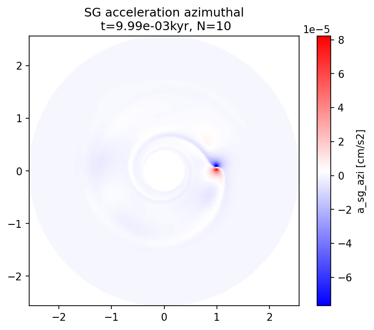

FargoCPT Selfgravity¶
This notebook guides you enabling self-gravity and plotting the accelerations.
First we create a new directory and change to it.
example_name = "401_Selfgravity"
example_dir = f"example_dirs/{example_name}"
import os
if not os.path.basename(os.getcwd()) == example_name:
!mkdir -p $example_dir
os.chdir(example_dir)
repo_root = os.path.abspath(os.path.join(os.getcwd(), "../../../"))
print(f"Current working directory: {os.getcwd()}")
print(f"Repository root directory: {repo_root}")
Current working directory: /home/rometsch/repo/fargocpt/examples/example_dirs/401_Selfgravity
Repository root directory: /home/rometsch/repo/fargocpt
Make sure the code is built by running make again.¶
%%timeit -n1 -r1
from sys import platform
if platform in ["linux", "darwin"]:
!make -j 4 -C $repo_root/src > make.log
else:
raise RuntimeError(f"Seems like you are not running MacOS or Linux but {platform}. This is unsupported. You are on your own, good luck!")
118 ms ± 0 ns per loop (mean ± std. dev. of 1 run, 1 loop each)
Preparing a setup file¶
We’ll take the example setup file from the examples directory and modify it in python. If you want to create setup files for a parameter study, just copy the code and make your own setup creator script.
configfile = "setup.yml"
!cp $repo_root/examples/config.yml $configfile
We’ll use the ruamel.yaml package to read and write the setup file. This can be set up to preserve comments which is very useful if you want to trace your decisions later on.
try:
import ruamel.yaml
except ImportError:
raise ImportError("Please install ruamel.yaml with `python3 -m pip install ruamel.yaml`")
yaml = ruamel.yaml.YAML()
with open(configfile, "r") as infile:
config = yaml.load(infile)
config["nbody"][1]["accretion efficiency"] = "2"
config["MonitorTimestep"] = 0.314 # monitor scalar files around every half orbit
config["Nmonitor"] = 20 # write a snapshot every orbit
config["Nsnapshots"] = 10 # wirte 100 snapshots
# use very low resolution by setting it to 2 cell per scaleheight, cps
# config["Nrad"] = 100
# config["Naz"] = 100
config["cps"] = 2
config["WriteSGAccelRad"] = "yes"
config["WriteSGAccelAzi"] = "yes"
config["WriteToomre"] = "yes"
config["SelfGravity"] = "yes"
# select the self-gravity mode, 'besselkernel' is likely what you want
# you can also choose 'symmetric', or 'basic' (warning: this is a non-symmetric force)
config["SelfGravityMode"] = "besselkernel"
# if you run a simulation with an non-isothermal equation of state, the following parameter sets
# the number of hydrosteps between kernel updates
# config["SelfGravityStepsBetweenKernelUpdate"] = 10
with open(configfile, "w") as outfile:
yaml.dump(config, outfile)
Run the simulation¶
from fargocpt import run
run(["start", configfile], np=2, nt=1, exe=repo_root+"/bin/fargocpt_exe", detach=False)
Running command: mpirun -np 2 --report-pid /tmp/tmpy5rc70j7 -x OMP_NUM_THREADS=1 /home/rometsch/repo/fargocpt/bin/fargocpt_exe start setup.yml
fargo process pid 1410484
[0] MPI rank # 0 runs as process 1410488
[1] MPI rank # 1 runs as process 1410489
[1] MPI rank # 1 OpenMP thread # 0 of 1 on cpt-kamino
[0] MPI rank # 0 OpenMP thread # 0 of 1 on cpt-kamino
[0] fargo: This file was compiled on Nov 14 2023, 12:56:40.
[0] fargo: This version of FARGO used _GNU_SOURCE
[0] fargo: This version of FARGO used NDEBUG. So no assertion checks!
[0] Using parameter file setup.yml
[0] Computing disk quantities within 5.00000e+00 L0 from coordinate center
[0] BC: Inner composite = reflecting
[0] BC: Outer composite = reflecting
[0] BC: Sigma inner = zerogradient
[0] BC: Sigma outer = zerogradient
[0] BC: Energy inner = zerogradient
[0] BC: Energy outer = zerogradient
[0] BC: Vrad inner = reflecting
[0] BC: Vrad outer = reflecting
[0] BC: Vaz inner = keplerian
[0] BC: Vaz outer = keplerian
[0] DampingTimeFactor: 1.00000e-01 Outer damping time is computed at radius of 2.50000e+00
[0] Damping VRadial to reference value at inner boundary.
[0] Damping VRadial to reference value at outer boundary.
[0] Damping VAzimuthal to reference value at inner boundary.
[0] Damping VAzimuthal to reference value at outer boundary.
[0] Damping SurfaceDensity to reference value at inner boundary.
[0] Damping SurfaceDensity to reference value at outer boundary.
[0] Damping Energy to reference value at inner boundary.
[0] Damping Energy to reference value at outer boundary.
[0] Radiative diffusion is disabled. Using fixed omega = 1.500000 with a maximum 50000 interations.
[0] Self gravity enabled. It uses the 'besselkernel' mode. The kernel is updated every 20 steps and after aspect ratio changed by 0.001000.
[0] Indirect Term computed as effective Hydro center acceleratrion with shifting the Nbody system to the center.
[0] Body force on gas computed via potential.
[0] Using FARGO algorithm for azimuthal advection.
[0] Using standard forward euler scheme for source terms.
[0] Cps is set, overwriting Nrad and Naz!
[0] Grid resolution set using cps = 2.000000
[0] The grid has (Nrad, Naz) = (74, 251) cells with (1.994113, 1.997395) cps.
[0] Computing scale height with respect to primary object.
[0] Using isothermal equation of state. AdiabaticIndex = 1.400.
[0] Viscosity is of alpha type with alpha = 1.000e-03
[0] Defaulting to VanLeer flux limiter
[0] Output information:
[0] Output directory: output/out/
[0] Number of files: 140
[0] Total output size: 0.00 GB
[0] Space Available: 31.23 GB
[0] SplitDomain: Doing some FFT test measures to optimize FFT calculations. This may take a few seconds.
[0] Initializing 1 RNGs per MPI process.
[0] Warning : no `radii.dat' file found. Using default.
[0] The first 1 planets are used to calculate the hydro frame center.
[0] The mass of the planets used as hydro frame center is 1.000000e+00.
[0] 2 planet(s) initialized.
[0] Planet overview:
[0]
[0] # | name | mass [m0] | x [l0] | y [l0] | vx | vy |
[0] -----+-------------------------+------------+------------+------------+------------+------------+
[0] 0 | Star | 1 | 0 | -0 | 0 | 0 |
[0] 1 | Jupiter | 0.0009546033 | 1 | 0 | -0 | 1.000477 |
[0]
[0] # | e | a | T [t0] | T [a] | accreting | Accretion Type |
[0] -----+------------+------------+------------+------------+------------+----------------+
[0] 0 | 6.368246e-17 | 1 | 6.280188 | 0.999548 | 0 | No Accretion |
[0] 1 | 6.368246e-17 | 1 | 6.280188 | 0.999548 | 2 | Kley Accret. |
[0]
[0] # | Temp [K] | R [l0] | irradiates | rampuptime |
[0] -----+------------+------------+------------+------------+
[0] 0 | 5778 | 0.0046505 | yes | 0 |
[0] 1 | 0 | 4.6505e-05 | no | 0 |
[0]
[0] Using Tscharnuter-Winkler (1979) artificial viscosity with C = 1.410000.
[0] Artificial viscosity is used for dissipation.
[0] Surface density factor: 2.50663
[0] Tau factor: 0.5
[0] Tau min: 0.01
[0] Kappa factor: 1
[0] Minimum temperature: 2.81162e-05 K = 3.00000e+00
[0] Maximum temperature: 9.37206e+94 K = 1.00000e+100
[0] Heating from viscous dissipation is enabled. Using a total factor of 1.
[0] Cooling (beta) is disabled and reference temperature is floor. Using beta = 10.
[0] Cooling (radiative) is enabled. Using a total factor of 1.
[0] S-curve cooling is disabled.
[0] CFL parameter: 0.5
[0] Opacity uses tables from Lin & Papaloizou, 1985
[0] Particles are disabled.
[0] Initializing Sigma(r) = 2.25093e-05 = 200 g cm^-2 * [r/(1 AU)]^(-0.5)
[0] Total disk is mass is 0.000348841 = 6.9366e+29 g.
[0] sg initialised
[0] Writing output output/out/snapshots/0, Snapshot Number 0, Time 0.000000.
[0] Writing output output/out/snapshots/reference, Snapshot Number 0, Time 0.000000.
[0] Writing output output/out/snapshots/1, Snapshot Number 1, Time 6.280000.
[0] Writing output output/out/snapshots/2, Snapshot Number 2, Time 12.560000.
[0] Writing output output/out/snapshots/3, Snapshot Number 3, Time 18.840000.
[0] Writing output output/out/snapshots/4, Snapshot Number 4, Time 25.120000.
[0] Writing output output/out/snapshots/5, Snapshot Number 5, Time 31.400000.
[0] Writing output output/out/snapshots/6, Snapshot Number 6, Time 37.680000.
[0] Writing output output/out/snapshots/7, Snapshot Number 7, Time 43.960000.
[0] Writing output output/out/snapshots/8, Snapshot Number 8, Time 50.240000.
[0] Writing output output/out/snapshots/9, Snapshot Number 9, Time 56.520000.
[0] Writing output output/out/snapshots/10, Snapshot Number 10, Time 62.800000.
[0] -- Final: Total Hydrosteps 1762, Time 62.80, Walltime 8.05 seconds, Time per Step: 4.57 milliseconds
0
print(os.listdir(config["OutputDir"]))
snapshots = os.listdir(config["OutputDir"]+ "/snapshots")
snapshots.sort()
print(snapshots)
['parameters', 'snapshots', 'fargocpt_output_v1_4', 'used_rad.dat', 'constants.yml', 'info2D.yml', 'monitor', 'dimensions.dat', 'info1D.yml', 'logs', 'units.yml']
['0', '1', '10', '2', '3', '4', '5', '6', '7', '8', '9', 'list.txt', 'reference', 'timeSnapshot.dat']
Following is an overview widget for the simulation. You can use the slider to scrub through the different snapshots.
Run the next cell again to refresh the snapshot list.
# %matplotlib widget
from fargocpt import Overview
overview = Overview("output/out/",
vars=["2:Sigma:rel,rphi",
"2:a_sg_rad:rphi",
"2:a_sg_azi:rphi",
"1:Sigma:minmax",
"1:a_sg_rad:minmax",
"1:a_sg_azi:minmax",
"1:Toomre:minmax"])
overview.create();

Visualizing SG accelerations¶
We turned on output of the self-gravity accelerations. Let’s have a look.
import numpy as np
import matplotlib.colors as mplcolors
import matplotlib.pyplot as plt
def plot_field(loader, name, N, ax=None, dataunit=None, vmin=None, vmax=None, cmap="viridis", title=None):
R, PHI, vals = loader.gas.vars2D.get(name, N, grid_for_plot=True)
if dataunit is None:
dataunit = vals.unit
Z = vals.to_value(dataunit)
X = R*np.cos(PHI)
Y = R*np.sin(PHI)
if ax is None:
fig, ax = plt.subplots(dpi=150)
else:
fig = ax.get_figure()
norm = mplcolors.Normalize(vmin=vmin, vmax=vmax)
pcm = ax.pcolormesh(X,Y,Z, norm=norm, cmap=cmap)
ax.set_aspect("equal")
t = loader.snapshot_time[N].to_value("kyr")
if title is None:
title = ""
else:
title += "\n"
title += f" t={t:.2e}kyr, N={N}"
ax.set_title(title)
cbar = fig.colorbar(pcm, ax=ax)
cbar.set_label(f"{name} [{dataunit}]")
return fig
from fargocpt import Loader
l = Loader("output/out/")
Nlast = l.snapshots[-1]
plot_field(l, "Sigma", Nlast, dataunit="g/cm2", cmap="magma", title="Sigma");
plot_field(l, "a_sg_rad", Nlast, dataunit="cm/s2", cmap="bwr", title="SG acceleration radial");
plot_field(l, "a_sg_azi", Nlast, dataunit="cm/s2", cmap="bwr", title="SG acceleration azimuthal");
plot_field(l, "Toomre", Nlast, dataunit="1", cmap="bwr", title="Toomre");


